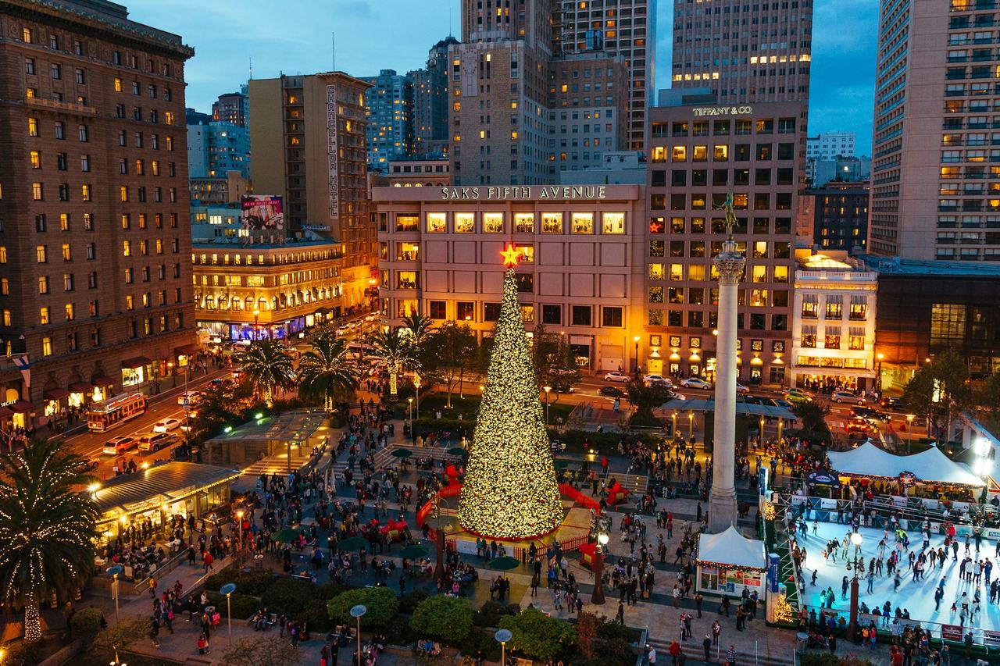

Union Square
The retail blocks around Union Square, at the top of Market Street. Coverage here begins with the buildings named in the city's public-art and privately-owned-public-open-space inventories.

Map
Named buildings and landmarks
-
-
-
-
-
-
-
-
-
-
-
-
Also here: Shreve Building, Oscar Luning Building, Hotel Fusion, Olympic Club building, Phoenix Building, Sachs Building, Elks Lodge of San Francisco, Family Club, Head Building, Baldwin Hotel, Angelus Apartments, Native Sons Building, Chancellor Hotel, St. Francis Apartments, Francesca Club, Hunter-Dulin Building, Medical-Dental Building, McKesson Plaza, Grand Hyatt Union Square, Qantas Airlines Building, Shiels Estate Building, Crocker Tower, Crocker Galleria, Neiman Marcus, One Kearny.
Streets documented so far
- Belden Street
1 building, built 1922; 1 in the Kearny-Belden Conservation District. - Claude Lane
1 building, built 1908; 1 in the Kearny-Market-Mason-Sutter Conservation District. - Geary Street
1 building; 1 in the Kearny-Market-Mason-Sutter Conservation District. - Kearny Street
1 building; 1 in the Kearny-Market-Mason-Sutter Conservation District. - Maiden Lane
1 building, built 1909; 1 in the Kearny-Market-Mason-Sutter Conservation District. - Market Street
1 building, built 1990; 1 in the Kearny-Market-Mason-Sutter Conservation District. - Post Street
1 building, built 1969. - Stockton Street
2 buildings, built 1989; 2 in the Kearny-Market-Mason-Sutter Conservation District.
Parks and public spaces
- Union Square
Civic plaza or square, 2.6 acres.
Historic districts here
Adjacent neighborhoods
The Financial District adjoins east across Kearny Street and Chinatown north of Bush Street. Nob Hill rises north-west, the Tenderloin begins west past Taylor Street, and South of Market lies across Market Street to the south.